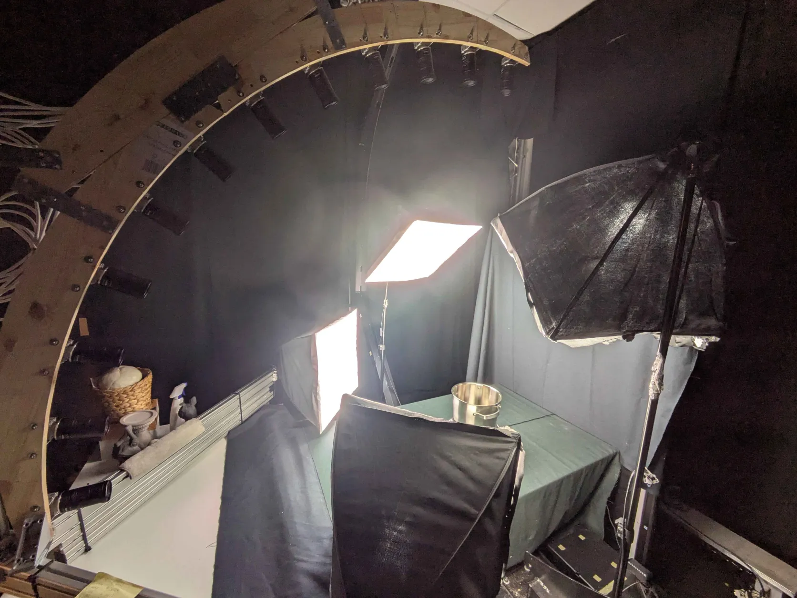
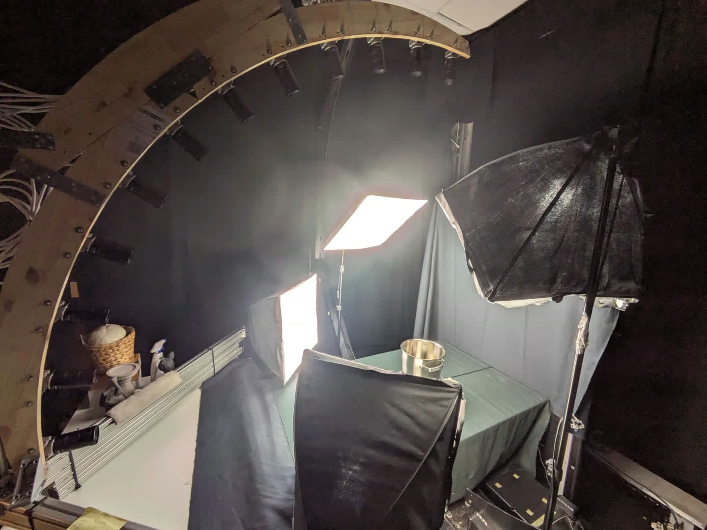
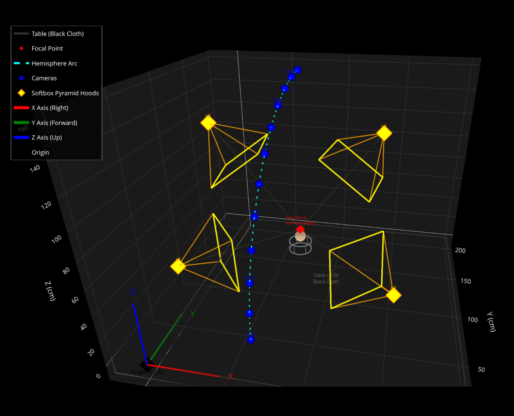
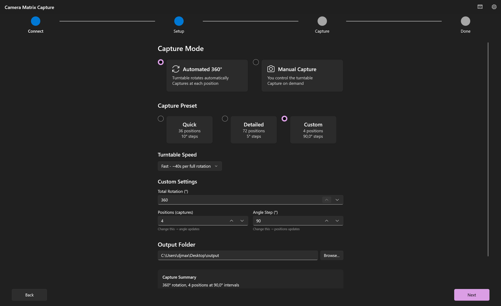
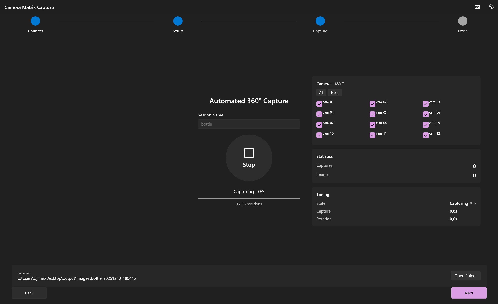

Monograph · 07 · Studio protocol
07
Thesis pipeline · studio · setup evidence
Studio protocol
Chapter contract
Owns physical studio geometry, lighting, V1–V3 evolution, ArUco pose gate — with setup photos and protocol plates.
12 cameras on a ~90° arc at ~1.4 m, 36×10° turntable steps → 432 views/object, four softboxes ~5600 K, windowless room.

Real setup Physical multi-camera rig.

Overhead / lab capture volume.

Measurement geometry schematic (arc, lights, origin).
| Version | Support | Outcome |
|---|---|---|
| V1 | Manual stand / hand rotate | ~85% diffuse / ~30% specular |
| V2 | Fiducial disc + ArUco | ~95% RC alignment |
| V3 | Motorized BLE turntable | ~98% batch success |
Decision
ArUco when SfM dies
COLMAP aligned 2/432 on a hard sequence. ArUco → RealityCapture mean reprojection 0.53–0.76 px.
What the protocol produced

Output Studio dataset objects from the V3 protocol.

Capture software setup UI during studio runs.

Live capture sequence UI.